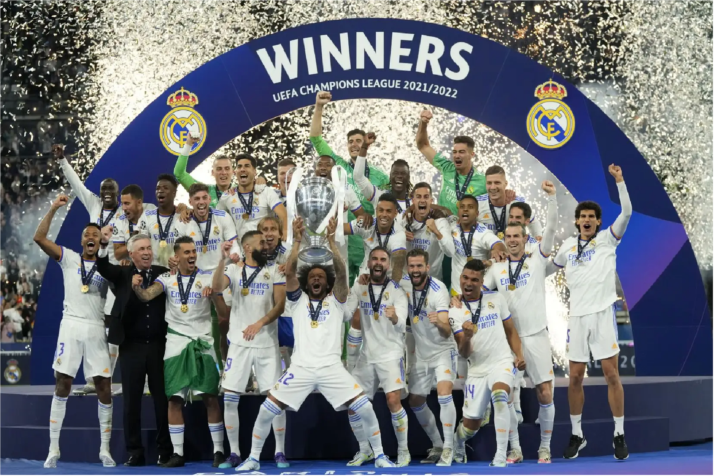

A então esperada fase "mata-mata", que meche com os corações de todos amantes de futebol, se iníciou em 13 de fevereiro. Das 64 equipes que iniciaram o campeonato, sobraram 32 e já hoje nas semifinais temos somente 4 equipes vivas no campeonato.
Mata-Mata; UEFA Champions League.
Atuais Campeões;

Real Madrid21/22

Manchester City22/23
Como favoritos, temos a participação dos dois maiores candidatos ao título, Manchester City e Real Madrid, que sem dificuldades eliminaram Copenhague e Leipzig.
A Uefa por meio de um sorteio definiu os confrontos das oitavas de final, desta edição 23/24. CLIQUE AQUI, Para analisar os confrontos.